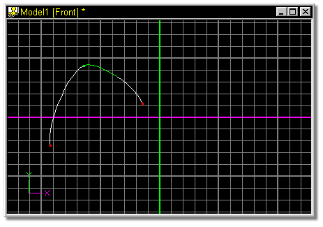
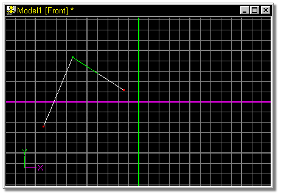

Initially, control points on a spline are smooth, meaning that the spline
remains continuous as it enters and leaves a control point, but they can also be
peaked. Peaks are formed at control points when the spline is not continuous, so
peaked control points are useful for constructing mechanical looking models.
The magnitude and bias of a spline can be adjusted separately on each side of
the peaked control point. To select which side of a peaked control point to
adjust for curvature, click on the appropriate spline (the selected spline will
turn green), then adjust the curvature on the Properties Panel, or with the Bias
Handles if they are visible.
All grouped control points are affected when the Peak button is clicked. The
state of a selected control point will show by the appropriate Peak or Smooth
button being down.
The default keyboard shortcut key for Peak is P.
To change a smooth control point into a peaked one, select the point by
clicking on it with the mouse. The selected point and associated spline will turn
green.

Click the Peak button on the Tool Panel.
The resulting spline:

Related Topics:

Attaching Control Points
Detach Point
Break Spline
Delete Control Point
Insert Control Point
Smooth
Magnitude
Bias